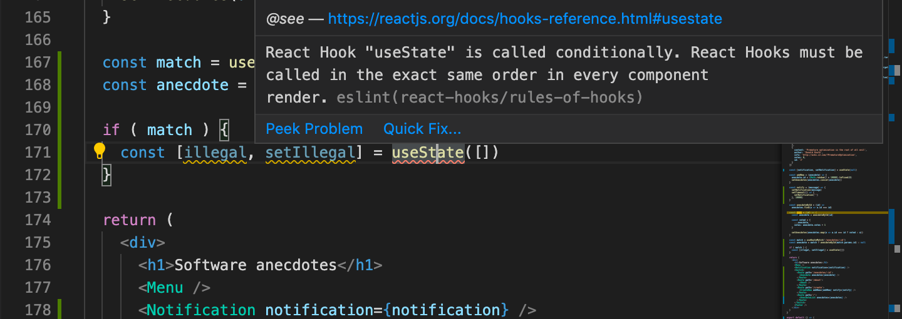

本章节的练习与前几部分的练习有些不同。前面部分的练习和这部分的练习是关于这部分介绍的理论 。
本章节还包含一个系列练习，其中我们修改了第4和第5章节中的Bloglist应用，以演练和应用我们所学的技能。
Hooks
React提供了10种不同的内置钩子，其中最常用的是我们已经广泛使用的useState和useEffect钩子。
在第五章节中，我们使用了useImperativeHandle钩子，它允许组件向其他组件提供其功能。
在过去几年中，许多React库已经开始提供基于钩子的apis。在第6章节中，我们使用了来自react-redux库的useSelector和useDispatch钩子来分享我们的redux-store和调度功能到我们的组件。Redux's hook-based api比其旧的、仍然可用的connectAPI容易使用得多。
我们在前一部分中介绍的React Router'sapi也是部分基于hook。它的钩子可以用来访问url参数和_navigation_对象，这允许以编程方式操纵浏览器的url。
正如在第一章节中提到的，钩子不是普通的函数，在使用这些钩子时，我们必须遵守某些规则或限制。让我们回顾一下使用钩子的规则，这些规则是逐字复制自React官方文档。
**不要在循环、条件或嵌套函数中调用钩子。**相反，总是在React函数的顶层使用钩子。
**不要从普通的JavaScript函数中调用Hooks。**相反，你可以。
- 从React函数组件调用Hooks。
- 从自定义Hooks中调用Hooks
有一个现有的ESlint规则，可以用来验证应用是否正确使用钩子。
Create-react-app有一个现成的规则eslint-plugin-react-hooks，如果钩子被以非法的方式使用就会被投诉。

Custom hooks
React提供了创建我们自己的自定义挂钩的选项。根据React的说法，自定义钩子的主要目的是促进组件中使用的逻辑的重用。
建立你自己的钩子让你将组件逻辑提取为可重用的函数。
自定义钩子是普通的JavaScript函数，可以使用任何其他钩子，只要它们遵守钩子规则。此外，自定义钩子的名称必须以_use_这个词开头。
我们在第一章节中实现了一个计数器应用，它的值可以递增、递减或重置。该应用的代码如下。
import { useState } from 'react'
const App = (props) => {
const [counter, setCounter] = useState(0)
return (
<div>
<div>{counter}</div>
<button onClick={() => setCounter(counter + 1)}>
plus
</button>
<button onClick={() => setCounter(counter - 1)}>
minus
</button>
<button onClick={() => setCounter(0)}>
zero
</button>
</div>
)
}
让我们把计数器的逻辑提取到它自己的自定义钩子中。该钩子的代码如下。
const useCounter = () => {
const [value, setValue] = useState(0)
const increase = () => {
setValue(value + 1)
}
const decrease = () => {
setValue(value - 1)
}
const zero = () => {
setValue(0)
}
return {
value,
increase,
decrease,
zero
}
}
我们的自定义钩子在内部使用_useState_钩子来创建自己的状态。该钩子返回一个对象，其属性包括计数器的值以及操作该值的函数。
React组件可以使用这个钩子，如下图所示。
const App = (props) => {
const counter = useCounter()
return (
<div>
<div>{counter.value}</div>
<button onClick={counter.increase}>
plus
</button>
<button onClick={counter.decrease}>
minus
</button>
<button onClick={counter.zero}>
zero
</button>
</div>
)
}
通过这样做，我们可以将_App_组件的状态和它的操作完全提取到_useCounter_钩子中。管理计数器的状态和逻辑现在是自定义钩子的责任。
同样的钩子可以重复使用在应用中记录对左右按钮的点击量。
const App = () => {
const left = useCounter()
const right = useCounter()
return (
<div>
{left.value}
<button onClick={left.increase}>
left
</button>
<button onClick={right.increase}>
right
</button>
{right.value}
</div>
)
}
应用创建了两个完全独立的计数器。第一个被分配到变量_left_，另一个被分配到变量_right_。
在React中处理表单是有些棘手的。下面的应用向用户展示了一个表单，要求用户输入他们的名字、生日和身高。
const App = () => {
const [name, setName] = useState('')
const [born, setBorn] = useState('')
const [height, setHeight] = useState('')
return (
<div>
<form>
name:
<input
type='text'
value={name}
onChange={(event) => setName(event.target.value)}
/>
<br/>
birthdate:
<input
type='date'
value={born}
onChange={(event) => setBorn(event.target.value)}
/>
<br />
height:
<input
type='number'
value={height}
onChange={(event) => setHeight(event.target.value)}
/>
</form>
<div>
{name} {born} {height}
</div>
</div>
)
}
表单的每个字段都有自己的状态。为了使表单的状态与用户提供的数据保持同步，我们必须为每个输入元素注册一个适当的onChange处理程序。
让我们定义自己的自定义_useField_钩子，简化表单的状态管理。
const useField = (type) => {
const [value, setValue] = useState('')
const onChange = (event) => {
setValue(event.target.value)
}
return {
type,
value,
onChange
}
}
该钩子函数接收输入字段的类型作为参数。该函数返回输入所需的所有属性：其类型、值和onChange处理程序。
这个钩子可以用以下方式使用。
const App = () => {
const name = useField('text')
// ...
return (
<div>
<form>
<input
type={name.type}
value={name.value}
onChange={name.onChange}
/>
// ...
</form>
</div>
)
}
Spread attributes
我们可以把事情再简化一下。因为_name_对象正好拥有input元素期望接收的所有属性作为props，我们可以用spread syntax以如下方式将props传递给该元素。
<input {...name} />
正如React文档中的示例所说，以下两种向组件传递props的方式达到的结果完全相同。
<Greeting firstName='Arto' lastName='Hellas' />
const person = {
firstName: 'Arto',
lastName: 'Hellas'
}
<Greeting {...person} />
应用被简化成以下格式。
const App = () => {
const name = useField('text')
const born = useField('date')
const height = useField('number')
return (
<div>
<form>
name:
<input {...name} />
<br/>
birthdate:
<input {...born} />
<br />
height:
<input {...height} />
</form>
<div>
{name.value} {born.value} {height.value}
</div>
</div>
)
}
当与同步表单状态有关的令人不快的细枝末节被封装在我们的自定义钩子中时，处理表单的工作就被大大简化。
自定义钩子显然不仅仅是一个重用的工具，它们还提供了一个更好的方法来将我们的代码划分为更小的模块化部分。
More about hooks
互联网开始充斥着越来越多与钩子有关的有用材料。下面这些资料值得一看。